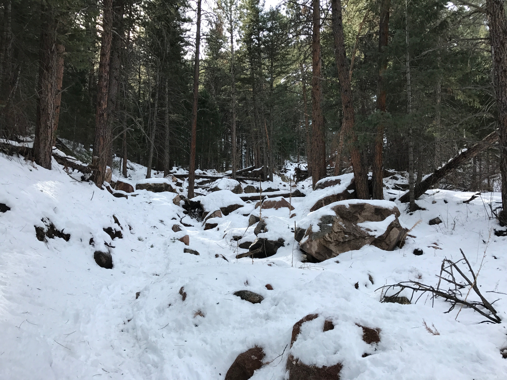
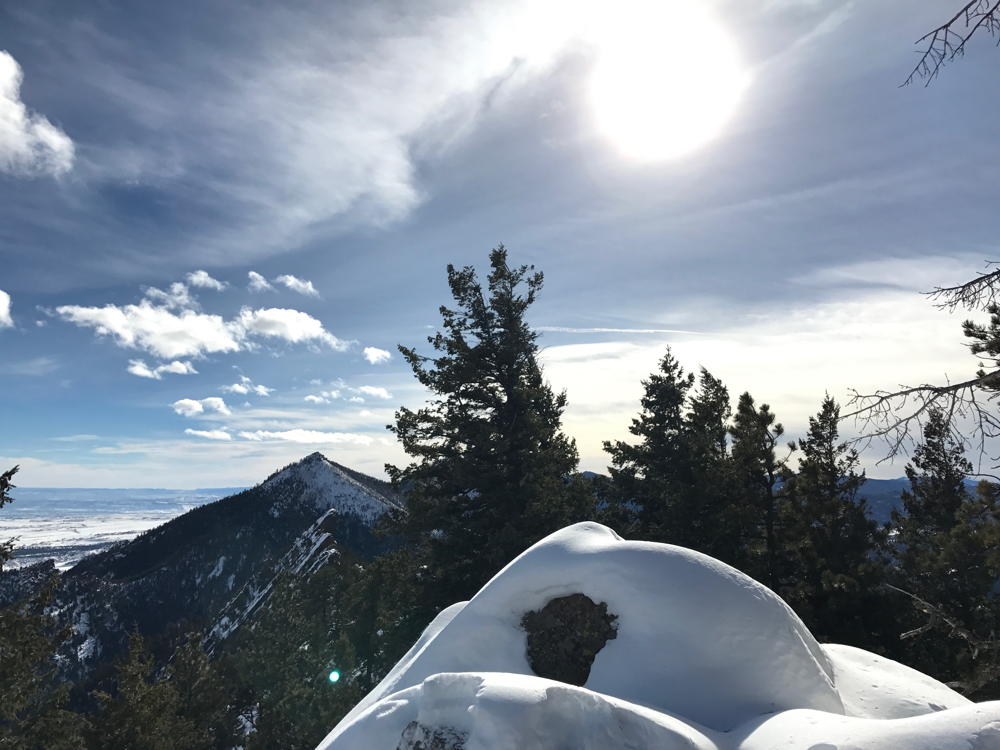
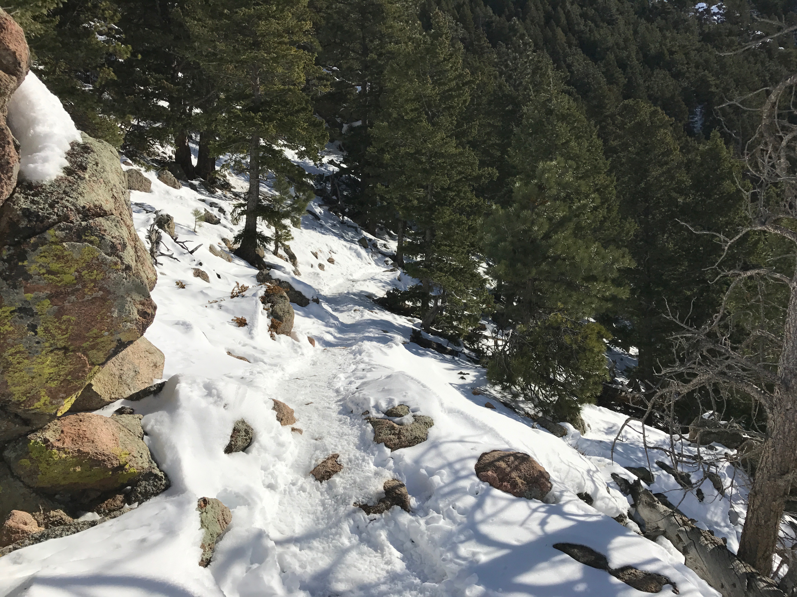
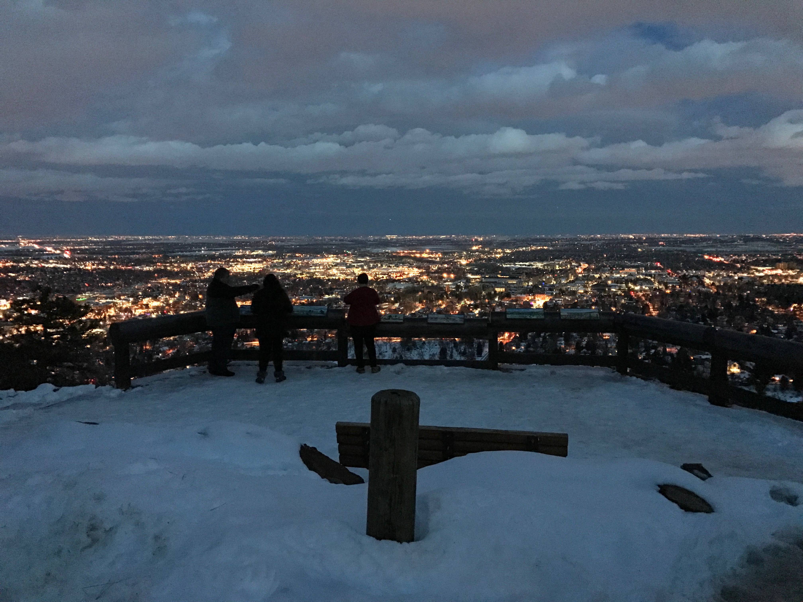

Today was a very warm day in Boulder. It was 50 degrees for most of the day and we still have about 5 inches of snow on the ground. I made full use of the warm weather and hiked all day.
I started off in the morning with Green Mountain Loop

View from the top

And then went on a run (mostly walking tho :p) from Flagstaff to the top of Sanitas Valley Trail.

Made it back to the car just in time for sunset.

In total I went 10 miles and 4,000 ft up.